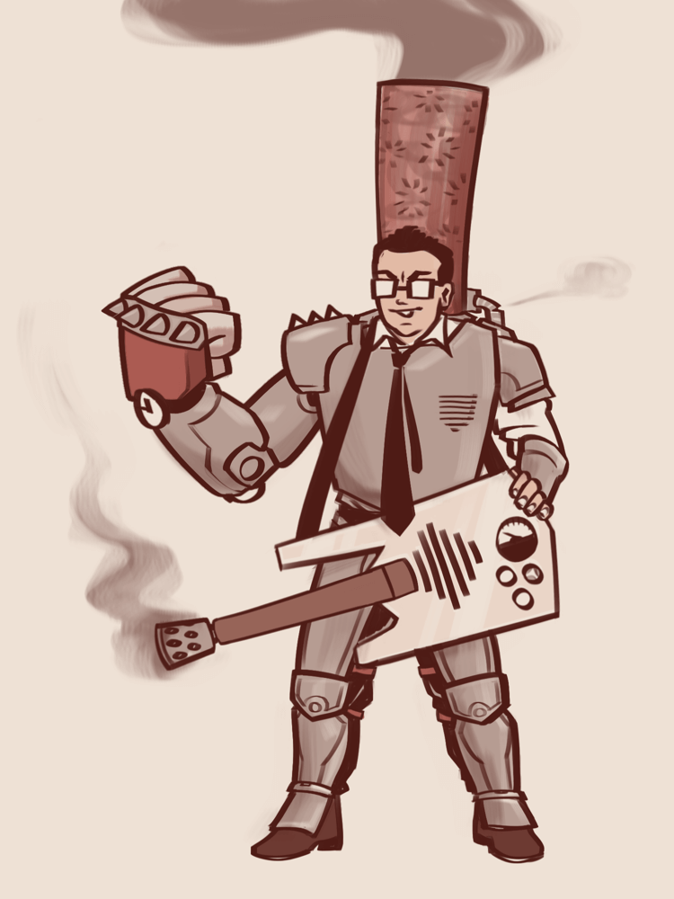
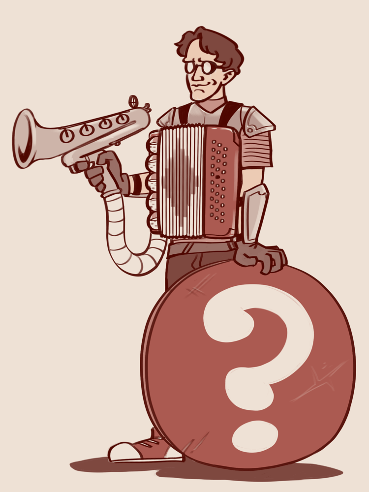

In 2024, I took part in a friendly Dungeons & Dragons game where each player put together a two-character team to participate in a multi-way death battle. You can surely guess who I went for.
They did not win—I maintain that They were doing too well, and the other players teamed up to bring Them down—but they fought valiantly and died interestingly and were a blast to play, so I thought I'd share their builds here. (Many thanks to my pal IgpayAtenlay, who knows far more about TTRPGs than I, and was a huge help in putting together these strategies.)
Note: These characters were built in DND 5e with some homebrewed allowances. They were super-optimized for (1) teamwork, (2) combat, and (3) dying spectacularly in a one-shot scenario. I have no idea how well either of them would fare without the other in a long-term campaign, but I've tried to offer ideas for potential tweaks if someone wanted to try.
In 2026, I was invited to play two more deathmatches. This time, I mixed it up with a third build I'd been planning for a while:

Newton York
Variant Human Artificer (Armorer)
Level 6
STR |
DEX |
CON |
INT |
WIS |
CHA |
10 |
12 | 14 | 18 | 12 | 10 |
+0 |
+1 | +2 | +4 | +1 | +0 |
Saving throw proficiencies: CON, INT
Skill proficiencies: Perception, Persuasion, Sleight of Hand, Performance, Athletics
HP |
AC |
SP ATK |
45 |
21-27 |
+7; DC15 |
STR |
DEX |
CON |
INT |
WIS |
CHA |
|
Point buy: |
10 |
12 | 14 | 15 | 12 | 9 |
Human Variant bonus: |
+1 |
+1 |
||||
L4 ability improvement: |
+2 |
Perception and Sleight of Hand skills come from the class; Persuasion comes from Variant Human; Performance and Athletics (and guitar-playing ability) come from a gracious DM letting me tweak the Entertainer background.
The lower AC value assumes plate armor (+18) plus a held shield (+2) with Repulsion Shield (+1).
The max value includes Enhanced Defense (+1) and the effects of a Shield spell (+5), available through the feat Magic Initiate.
He can easily gain yet another +1 AC from one of Xander's Resistance Elixirs, but I'm trying to be reasonable here.
This build was originally designed to make it possible to fight toe-to-toe with a Level 8 Paladin superhero. York's job is to handle up-close and personal confrontation with a heavy hitter, buying Xander room to breathe while harboring a surprising variety of ranged capabilities himself.
Arcane Armor (Guardian) — "Indestructible, indefensible"
Use plate armor (AC 18) for an EPIC MECH SUIT that skips the usual STR requirement. Comes with Defensive Field to pad his HP and melee-capable Thunder Gauntlets.
York can pick just one Infusion to apply here, though he can swap them after a long rest:
- Armor of Magical Strength. If someone might try to restrain or shove him, you'll want this one.
- Resistant Armor. Excellent if you know he'll encounter a specific type of damage that can bypass AC or CON saves.
- Enhanced Defense. If you're really going for a cartoonishly high base AC.
Click here for further notes.
York's armor model can actually be changed to the Infiltrator type after a short or long rest, so he does have a more subtle mode. I've never tried using it, though!
The Chessmaster — A "highly misguided" custom shield/electric guitar.
Infused with Repulsion Shield, it provides a total of +3 to AC and lets York act as a bouncer, no STR check needed, when someone gets too close and personal. This is the focus through which York produces magical effects.
(While it's less satisfying from a flavor text point of view, he can always switch to using his armor as a focus if something happens to the Chessmaster.)
Night-Vision Spex — "I see you through my spyglass, baby..."
York's third and final infusion can augment his sorry human eyeballs by applying Goggles of Night to his glasses. However, infusions can be applied to other people's equipment, and Xander might actually need the vision boost more!
Attacks:
Thunder Gauntlets — "That crazy bastard wants to hit me!"
York delivers a thunderous punch with one comically oversizedpaper machemetal hand.Click here for further notes.
Armorers get multiattack at level 5, so York can attempt two punches per turn for a not-too-shabby 2d8+8 combined damage. If a gauntlet punch lands, the target temporarily has disadvantage on attacks against anyone but York. Their apparent nonchalance belies the fact that they can only think of him...
Cantrips:
Fire Bolt — "People in the back, I'd like to ask you to disregard the fire laws!"
A jet of flame shoots from the shield's "headstock".Toll The Dead* — "You're older than you've ever been / and now you're even older"
York plucks a single string, and the ominous note fills you with soul-sucking existential dread.Mind Sliver* — "Like a volume beyond comprehension..."
York cranks a guitar dial all the way up and a screech of feedback seems to pierce your brain, leaving you disoriented.Booming Blade — "You can't get away / You can't really hide"
York throws a super-charged punch with his Thunder Gauntlets, getting a second guaranteed hit if you try to move afterwards.Click here for further notes.
(*) Spells marked with an asterisk are Wizard spells learned via Magic Initiate.
York is quite versatile: Thunder, Fire, Psychic, and Necrotic damage are all represented here. Use Fire Bolt against the AC of squishy wizards who think they're standing at a safe distance, while the Wizard spells can target the dump-stat INT or WIS of any high-AC meathead chasing him down. Toll the Dead's 2d12 is quite high damage for a cantrip.
Booming Blade is less efficient damagewise than just punching someone twice, but the ability to discourage movement is helpful for team strategies. I've played him solo with this one subsitutued for Shocking Grasp, which gets advantage against opponents with metal armor + prevents an opportunity attack if he needs to retreat. Plus, very mad-science flavorful. KA-ZAP!
Level 1 (4 slots):
Shield* — "You'll always miss / My big ol' body"
A temporary forcefield crackles around York the moment before a blow strikes, causing it to spark harmlessly off the surface.Magic Missile — "Let's get those missiles ready to destroy the universe!"
Panels pop open in the shoulders of York's armor, tiny launchers swiveling towards their targets.Thunderwave — "If the bass doesn't get you..."
York strums a gnarly chord and the earthshaking force of the reverb blows everybody nearby several steps backwards.Click here for further notes.
(*) The spell marked with an asterisk is a Wizard spell learned via Magic Initiate. York gets one bonus use of this.
If York is living up to his full windmill-tiltin' potential, ALL his L1 spell slots (plus the bonus one he gets from Magic Initiate) will go to Shield. As a reaction, it can be saved for the hits he knows will land and hurt, and the AC bonus persists until the end of the round. When these slots are gone... try to have an exit strategy.
Magic Missile is here to break Concentration on spells like Entangle that York can't STR-save himself out of. Damagewise, it's barely better than a cantrip. Consider casting at L2 to avoid wasting a potential Shield.
Thunderwave is loads of fun in the less Giant-Killer-y scenario of being swarmed by smaller, more fragile enemies. Still, consider casting at L2.
York will know a couple more spells than the above, so here are some others I consider reasonably useful and on-theme:
- Cure Wounds. Good for emergencies, but actually less efficient than taking an action to drink a Healing Elixir from Xander. Cast this at L2 or not at all.
- Disguise Self. York loves the idea of going undercover, though his rather distinctive... self does his Deception roll no favors. Better play it causal and hope nobody asks him any direct questions. Xander's Transformation Elixir has the same effect, albeit for only 10 min.
- Identify. Slightly expensive material component, but this just seems like an ability York should have. He's a gearhead!
- Alarm. Complete paranoia is total awareness, as certain cult leaders have said. Keep an ear out for unexpected visitors while Xander gets his sleep.
Level 2 (2 slots):
Shatter — "...the treble will get you"
York strums a screamin' chord and the sound waves hit the resonant frequency of a nearby material, shaking the air around it to pieces.Click here for further notes.
I'd reccommend saving L2 slots for upcasting useful L1 spells. Shatter does no more damage than Thunderwave cast at L2 would, in a smaller radius. The advantage is supposed to be that it's ranged, but York already has a lot of ranged options. Great sound-based flavor, though.
Other on-theme spells that York might know and use in specific situations include:
- Magic Mouth. "Hello, you have reached the lair of John and John. Please, just stand there and keep screamin', and someone will be with you shortly." (You can do something similar, though less powerful, for free with Magical Tinkering.)
- Aid. A support spell that doesn't require concentration offers a way to lend a helping hand.
- Heat Metal. A damage spell that does require concentration offers another excuse to use the flamethrower-headstock.
- Lesser Restoration. Practical to have on hand when your partner likes slinging around poisons.
Early/alternate takes on the character gear. Click any image to enlarge.



Alexander Lincoln
Variant Human Artificer (Alchemist)
Level 6
STR |
DEX |
CON |
INT |
WIS |
CHA |
8 |
16 | 12 | 18 | 14 | 8 |
-1 |
+3 | +1 | +4 | +2 | -1 |
Saving throw proficiencies: CON, INT, WIS
Skill proficiencies: Perception, Performance, History, Arcana, Sleight of Hand
HP |
AC |
SP ATK |
39 |
18-21 |
+7; DC15 |
STR |
DEX |
CON |
INT |
WIS |
CHA |
|
Point buy: |
8 |
15 | 12 | 15 | 13 | 8 |
Resilient bonus: |
+1 |
|||||
Human Variant bonus: |
+1 |
+1 |
||||
L4 ability improvement: |
+2 |
Arcana and Sleight of Hand skills come from the class; Performance comes from Variant Human; History and Perception come from the Rune Carver background, which a gracious DM let me tweak to replace the extra tool proficiencies with instrument proficiencies. The boost to WIS saves comes from the Resilient feat.
The lower AC value assumes Breastplate or Scale Mail (+14, +2 DEX) plus a held shield (+2).
The max value includes Repulsion Shield (+1), Enhanced Defense from York (+1) and a temporary Resilience Elixir (+1). To use his infusions more interestingly, I'd reccommend augmenting his AC just by seeking partial cover when you can.
This build was originally designed to evade Charisma-based spellcasters while watching for the perfect moment to step in and melt someone's face clean off. In the meantime, find Xander hiding in some back corner of the battlefield, fiddling happily with one of his many strange gadgets.
Xander can only use three Infusions at a time, but they can be swapped every long rest. Options which use York's extra infusion instead are marked with double asterisks (**).
Bellows of Holding — "Can't just ask some perfect stranger what they're hiding in their accordion case"
This infused accordion can carry a whole laboratory's worth of supplies on
the subwayany quest. The buttons and switches magically dial up whatever object he needs. (Yes, I know.) The attached blunderbuss-bell is the focus through which he aims attacks.Click here for further notes.
Boring, but practical; I'd set and forget this one. Pulling an item from true hammerspace takes a full action, but Xander usually only needs to retrieve the sort of small objects that fit in his accessible inventory during combat. My DM let me describe those, and his cantrips, as also being dispensed via accordion for fun flavor text.
Treating the handheld "blunderbuss" as part of his alchemist's kit gives him a +4 Alchemical Savant damage bonus.
Shield of Mystery — "I'm going to die if you touch me one more time (well, I guess that I'm going to die no matter what)"
Xander maintains his personal space bubble with an infused Repulsion Shield. On top of the AC bonus, he can push attackers back out of range as a reaction, no STR check or save required.
**One of York's unused armor infusions can be applied to Xander's breastplate if AC is a serious concern.
Safety Goggles — "Unboxing my new x-ray vision scope..."
If your DM is as nice as mine, they may let Xander's goggles have some inherent mechanical benefits. If not, he still has some neat infusion-based options:
- **Goggles of Night. Lack of Darkvision is the killer of ranged spellcasting, so ONE of them should probably be the guy with glasses.
- Eyes of Charming. Offset Xander's low CHA with the disarming power of INTENSE, UNSETTLING EYE CONTACT. Unfortunately, this tends to make people think he's a creep afterward.
Pipes of Haunting — "Clarinet solo!"
Of course, sometimes "unsettling" is the goal. This infusion can turn the tide of battle by letting him bust out such a hip-hip horrific woodwind solo that everyone thinks twice about approaching or attacking him.
Blue Canary — "Homunculus is by your side"
A fragile mechanical bird who watches over you. More a lover than a fighter, the Canary makes for an excellent scout or spy, can deliver small objects and short messages, and can channel touch-range spells without forcing Xander to actually touch anyone.
STR
DEX
CON
INT
WIS
CHA
4
15 12 10 10 7 -3
+2 +1 0 0 -2
HP
AC
Skills
11
13
+6 Perception, +5 Stealth
Click here for further notes.
HP is 1 + 4 (INT modifier) + 6 (level). Carrying capacity is 4 (raw STR) x 15 = 60lbs.
It was tempting to call the Canary's gemstone heart a blue sapphire, but using a gem that valuable in a very killable bird servant is probably bad idea. The Canary can stow itself safely in Xander's accordion during combat, or take one for the team and be re-assembled later.
My DM let me combine this with Magical Tinkering to prep 8 prerecorded audio clips that the Canary can trigger like a soundboard, whether for long-distance stealth communication or pulling off a diversion.
**Demon Core of Holding — "Too bad my greatest trick can only be performed one time..."
Using York's last infusion to create a second, smaller Bag of Holding gives Xander a last-ditch nuclear option: essentially, a murder-suicide pill. Putting it inside his accordion's hammerspace tears a hole in reality that sucks everything within a 10-foot radius into the Astral Plane. No saving throws, no nothin'.
In the words of many a memorable villain: If I can't win, no one can.
Attacks:
Sling — "I'd like to change your mind / by hitting it with a rock"
Xander pulls back a lever, spring-loading his blunderbuss to toss his ammunition of choice towards you.Click here for further notes.
1d4+3 Bludgeoning isn't so exciting, but it's all in what's loaded into it. See the inventory section.
Without a melee option, Xander can't actually take opportunity attacks—anyone can brush past him and he won't attempt to engage. I thought this was pretty funny and in-character, but I guess he could be equipped with a dagger too.
Cantrips:
Acid Splash — "They devised a plan, they would melt a man..."
Xander's fingers fly over the accordion buttons and a jet of sizzling acid shoots from the mouth of the blunderbuss at you.Create Bonfire — "Why the burning autumn leaves?"
Xander presses a key on the blunderbuss, and lenses flip up to focus a brilliantly hot point of light which erupts into flame.Click here for further notes.
Yes, most artificers only get two cantrips. York is just an overachiever.
Both of these are DEX saves; the main difference is Acid Splash's ability to hit two targets and the damage type. Don't forget the +4 Alchemical Savant damage bonus.Using Create Bonfire under an enemy that's just been hit by York's Booming Blade forces an amusingly mean damned-if-you-do move, damned-if-you-don't move situation.
Level 1 (4 slots):
Entangle* — "In the overgrowth, of the underbrush..."
A jet of water from the mouth of the blunderbuss causes strange, twisting plants to sprout where it falls, rooting anyone nearby to the spot.Catapult — "Directly I'll gooooooooooooooo-"
Xander uses his accordion to dial up his ammunition of choice, and a burst of compressed air shoots it out of the blunderbuss at an incredible speed.Comprehend Languages* — "Mehyoodnat khoss dham vek Dehlinkwangt meeveh."
A little ticker-tape printout begins to unspool from a slot in the accordion's top, letting Xander look up any words he's unfamiliar with.Click here for further notes.
(*) Spells marked with an asterisk are learned via Rune Shaper and can be cast once per long rest without expending a spell slot.
Catapult is the star of this show. It has 120ft of range, and when its 3d8 bludgeoning (4d8, if cast at L2) combines with the effects of the ammunition used... you already know the ending; it's the part that makes your face implode. If possible, use this after York's Mind Sliver sabotages the target's saving throw.
Xander's ability to do damage continues to hinge on his enemies failing DEX saves. Entangle's DC15 STR save can tie down several frustratingly dextrous enemies at once.
Xander will know a couple more spells than the above, so here are some others I consider reasonably useful and on-theme:
- Magic Missile. Weaker than his cantrips, but the guaranteed hit can break an opponents' concentration in a hurry.
- Cure Wounds. Good to heal a buddy in a pinch, but less efficient than taking an action to drink a Healing Elixir.
- Expeditious Retreat. Takes Concentration, but sometimes you just need to skedaddle.
- Feather Fall. Sweetly as I fall backwards in slow motion... Let's just say They've installed parachutes in Their gear for emergencies.
Level 2 (2 slots):
Flaming Sphere — "Woah, your head's on fire!"
A flaming mass of incandescent gas erupts from the mouth of the blunderbuss and, somehow, just keeps going.Rope Trick — "Where did the end of it go?"
Click here for further notes.
If you're trying to kill something big fast (a Giant, perhaps) your most destructive option is still upcasting Catapult.
Flaming Sphere does no damage when it first appears, but can provide several rounds' worth of distracting damage while Xander hunkers down somewhere safe and makes other plans.
Rope Trick guarantees an emergency hiding place for Xander. It even sticks around long enough for a short rest! My DM let Xander climb the rope at half his movement speed. If yours wants to force an athletics check, see if tying hand-hold knots into the rope will give him advantage.
While spells and attacks can't exit the space, the Canary can, and he can lean outside of the space temporarily to do some things.Xander will know a couple more spells than the above, so here are some others I consider reasonably useful and on-theme:
- Invisibility. Did the cat just learn how to fly?... Won't work in combat, but there are plenty of reasons not to want to be seen.
- See Invisibility. ...No, I'm only holding him up. Useful to be able to counter anything you can cast.
- Protection from Poison. Like I just said.
- Heat Metal. It's just a really good spell to use against anyone with metal armor.
"Walking stick, lobster shell, cellophane, acid bath, legal pad, nitrogen, avocado, sleeping bag, rope..."
Damage-increasing ammunition:
- Oil flask, 1sp. Adds +5 to subsequent fire damage to the target.
- Acid vial, 25gp. Deals 2d6 additional acid damage.
Click here for further notes.
My DM let me stack these effects on top of the base damage of hitting the target with Sling or Catapult. Both York and Xander have fire-based attacks, and acid makes Catapult into an absolute killer.
The too-boring-to-mention-above Alchemy Jug infusion option can generate either 2 vials' worth of acid or 2 flasks' worth of oil a day for free. You'll need empty vials (1gp) or flasks (2cp) to decant them into, but your DM may be more or less forgiving about the accounting there.
Poison-gas ammunition:
- Malice, 250gp — "I guess you must be goin' blind / there's nothing left but the smoke that's comin' off the mind"
- Ether, 300gp — "Little vials full of knock-out drops..."
Click here for further notes.
The high expense makes these more niche, but even if a shot misses due to a DEX save (target dodges, it breaks on the ground) or high AC (it breaks harmlessly against their armor), the cloud of gas still forces that DC15 CON save.
Malice is particularly powerful against magic users: most spells can only be cast on a visible target, and even if they have Lesser Restoration, it costs a round and a L2 spell slot to shake the effect off.
Ether is particularly powerful against an individual enemy: until someone shakes them awake or injures them, they're down for the count, and you're out of combat turn order!
If you can, use the poisons directly after a successful Mind Sliver from York sabotages their saving throw. (And deliver it via Sling; Catapult forces a DEX save first.)
Xander can make two of these (Healing, Swiftness, Resilience, Boldness, Flight, or Transformation) every long rest... though he doesn't get to decide which effects he'll get. That's just the creative process for you.
Click here for further notes.
This also hypothetically requires empty flasks, but drinking out of them instead of throwing them at people makes these ones re-useable.
I'd hoard all the health potions you can get and hang onto 2 of each of the other types for emergencies. In a longer campaign, I'd save extras for trade or barter—see suggested downtime activities below.
Odds & Ends:
- 10 Foot Pole. THE STICK!!! For poking potential traps and other things you wouldn't touch without one.
- Bullseye Lantern. For dividing an audience between People and Apes. Seriously, though, since neither of Them have Darkvision, this is a pretty high priority item.
- Caltrops. Slow down pursuers through narrow passageways.
- Crowbar. Advantage to STR checks, since Xander is such a stunning physical specimen.
- Tinderbox. Sometimes it's good to be able to start fires nonmagically.
Click here for further notes.
Props! Not a gimmick, just a clever way to put on a big show with small resources. Many of these items already come in the starting equipment packs that characters rarely think to look in. Knowing what you have, what it does, and when to use it is a superpower.
I have to admit I've never played these characters in an extended campaign, but this is how I would make Xander's rate of object consumption sustainable:
Early/alternate takes on the character gear. Click any image to enlarge.


Amber Goldberg
Standard Human Monk (Open Hand) Level 5 / Druid Level 1
STR |
DEX |
CON |
INT |
WIS |
CHA |
10 |
16 | 16 | 10 | 16 | 11 |
+0 |
+3 | +3 | +0 | +3 | +0 |
Saving throw proficiencies: STR, DEX
Skill proficiencies: Acrobatics, Athletics, Insight, Stealth
HP |
AC |
SP ATK |
51 |
16 |
+6; DC14 |
STR |
DEX |
CON |
INT |
WIS |
CHA |
|
Point buy: |
9 |
15 | 15 | 9 | 13 | 10 |
Standard Human bonus: |
+1 |
+1 |
+1 |
+1 |
+1 |
+1 |
L4 ability improvement: |
+2 |
* I had Cloak of Protection during play, but you may not. If you do, add +1 to AC and all saving throws listed above.
AC value uses Unarmored Defense: 10 + 3(DEX) + 3(WIS). Attack bonuses use DEX, and abilities with Ki and Druid spells both use WIS. Acrobatics and Stealth come from the base class; Athletics and Insight come from the City Watch background.
This build was made for a quick-and-dirty solo fight.
Wingwear — "She flew away / Flew away"
Click here for further notes.
Cloak of Protection — "She flew away / Flew away"
Click here for further notes.